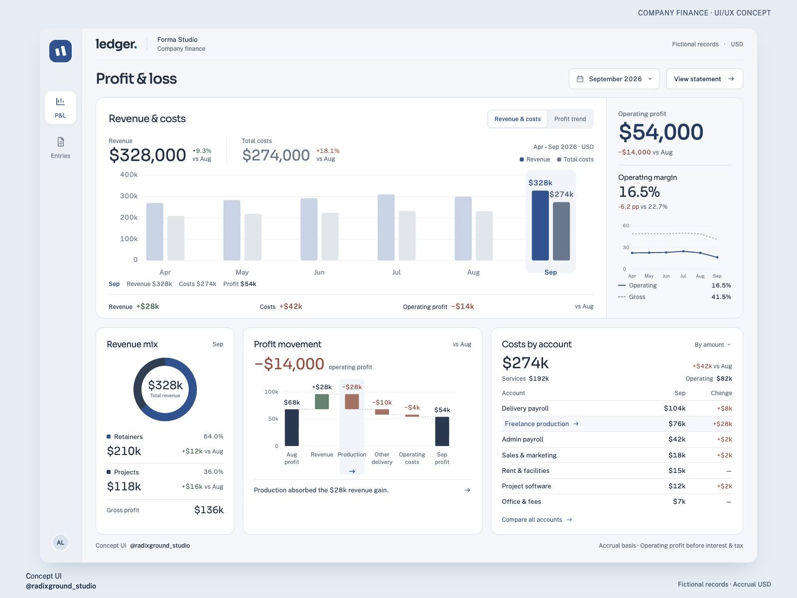
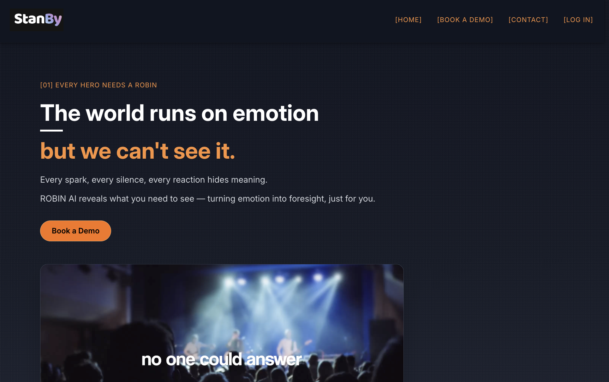
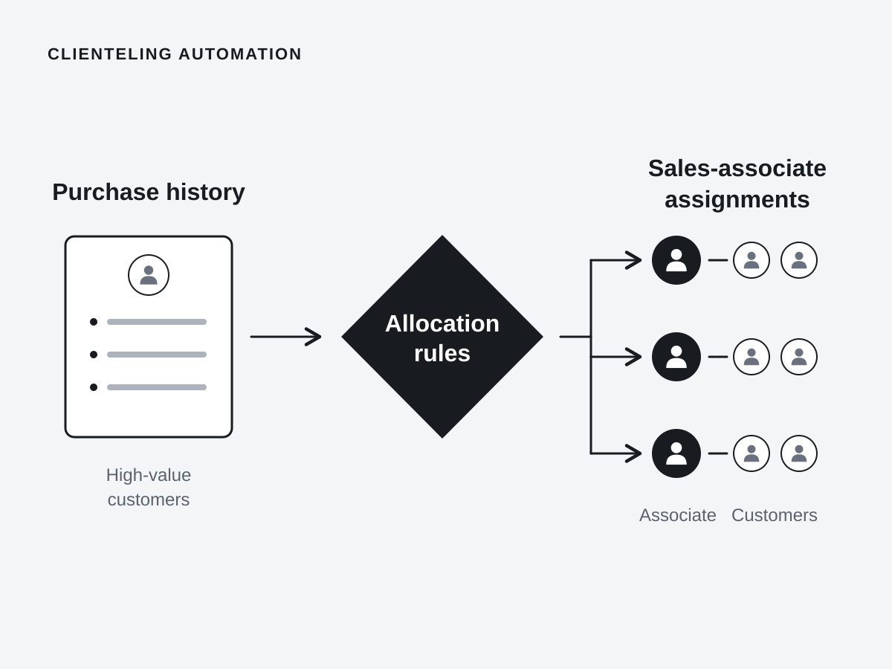
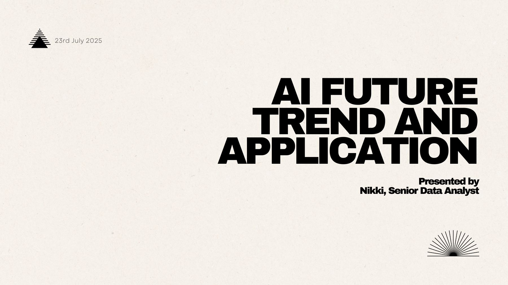
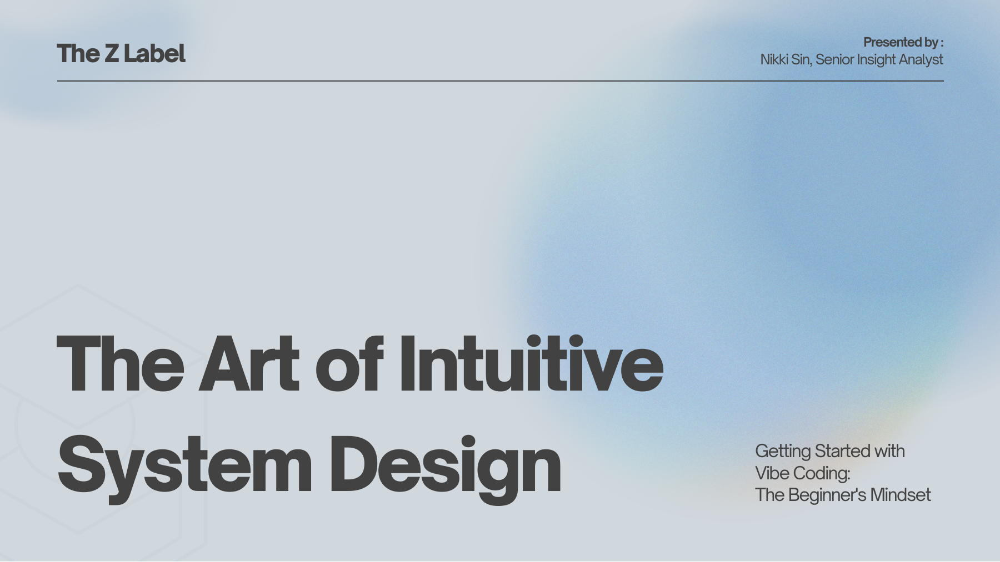

UI/UX Agent Harness
AI-assisted design & prototyping
A collection of projects, explorations and details. Some are real cases. Some are just for fun.

AI-assisted design & prototyping

AI product delivery

Workflow exploration

Entertainment data platform

Project management & analysis


End-to-end website delivery

Migration support

Segmentation, UAT & SQL
Invited guest speaker at HKU SPACE. Two talks in 2025, sharing practical ways to work with AI.

